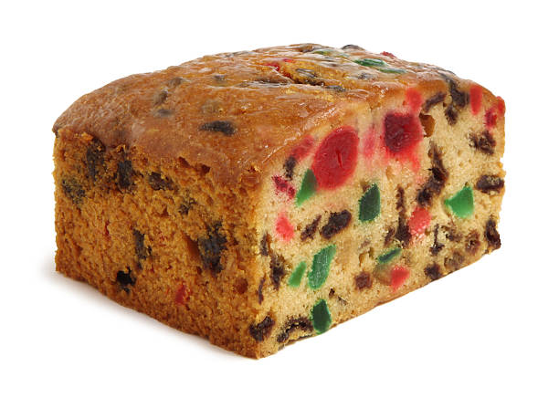

Description
This fruitcake recipe is very easy to make through use of prepared mincemeat and mixed candied fruit for a quick Christmas-time classic.
Ingredients
- 2.5 cups sifted all-purpose flour
- 1 teaspoon baking soda
- 2 eggs, lightly beaten
- 1 (28 ounce) jar prepared mincemeat pie filling
- 1 (14 ounce) can sweetened condensed milk
- 1 cup chopped walnuts
- 2 cups candied mixed fruit
Steps
- Preheat oven to 300 degrees F (150 degrees C). Butter cake pans, and line with wax paper. Butter the wax paper.
- Sift the flour with the baking soda.
- In a large bowl, combine eggs, mincemeat, condensed milk, fruit, and nuts. Fold in dry ingredients. Pour into prepared pans.
- Bake for 2 hours, or until center springs back and top is golden brown. Cool. Turn cakes out onto wire rack; remove wax paper.
Return to top
Return to Homepage